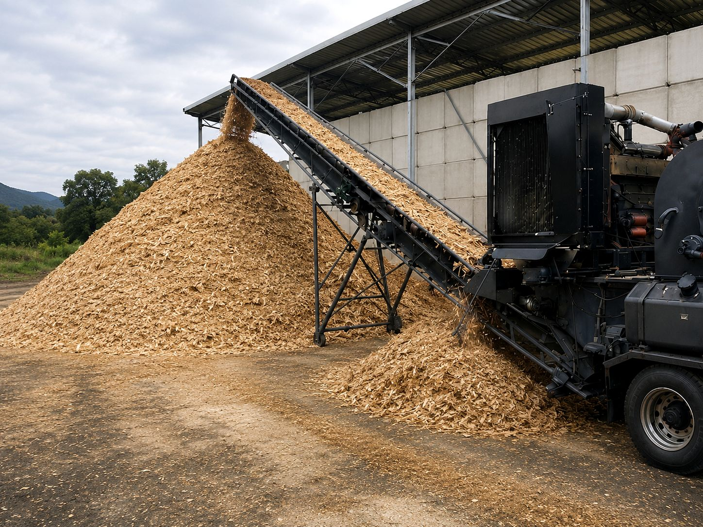
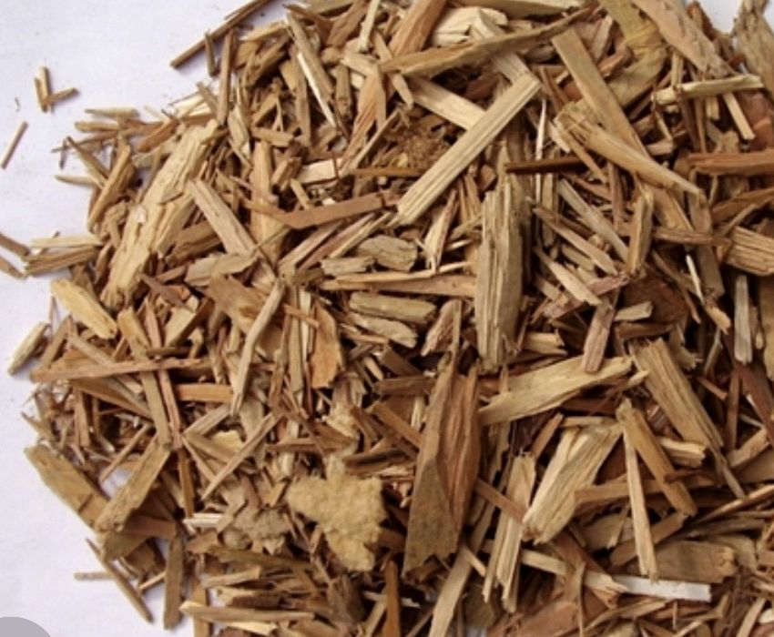

01
チップサイズの管理
用途に応じて粒度やサイズ感を確認し、燃料として扱いやすい木質チップへ整えます。
 株式会社ClearthForest Resource Company
株式会社ClearthForest Resource Company

SERVICE
一次破砕後の木材を自社プラントで選別・品質管理し、バイオマス燃料として利用できる木質チップへ製品化します。
木質チップ製造は、一次破砕された木材を、燃料として利用できる製品へ仕上げる工程です。
株式会社Clearthでは、自社プラントで選別・異物確認・チップサイズ管理・品質管理を行い、バイオマス発電所向け燃料として利用できる木質チップを製造しています。
森林整備や木材廃棄物処分で発生した木材を再資源化し、廃棄物の削減と循環型社会づくりに貢献します。
一次破砕から木質チップ製造、製品保管、バイオマス燃料供給まで自社で一貫対応できるため、法人企業や発電事業者からの継続的な相談にも対応しやすい体制を整えています。
WHO IT HELPS
バイオマス発電事業者、木材関連企業、自治体、木質バイオマスを活用する事業者
FEATURE
森林資源を無駄なく活用し、再生可能エネルギーへつなげる体制を整えています。
用途に応じて粒度やサイズ感を確認し、燃料として扱いやすい木質チップへ整えます。
一次破砕後の木材を確認し、異物の混入を抑えながら品質の安定した製品化を行います。
製造した木質チップは、バイオマス発電所向け燃料としての供給を見据えて保管・出荷します。
WHY CLEARTH
現場対応から再資源化、供給までを一体で考え、安心して相談できる体制を整えています。
一次破砕後の木材を選別・異物確認・サイズ管理し、燃料として使いやすい木質チップへ仕上げます。
チップの粒度や混入物を確認し、発電所向け燃料として安心して相談できる品質管理を行います。
木質チップ製造後の保管・出荷、バイオマス燃料供給まで一貫してご相談いただけます。
PRODUCT
株式会社Clearthで製造した木質チップです。
一次破砕後の木材を自社プラントで選別・異物確認・サイズ管理し、燃料として利用しやすい木質チップへ製品化しています。
実際の製品写真を掲載することで、チップの質感や粒度を確認しやすくし、発電事業者や法人企業にも安心してご相談いただけるページ構成にしています。
製造した木質チップは、主にバイオマス発電所向け燃料として供給し、森林資源や木材廃棄物の再資源化に貢献しています。

CONSULTATION
実際の木質チップ写真をもとに、粒度や質感、用途に応じた品質条件を確認しながらご相談いただけます。
木材廃棄物処分や一次破砕から発生した木材を再資源化し、バイオマス発電所向け燃料として活用できる木質チップへつなげます。
品質確認・製品保管・出荷まで一貫して管理し、法人企業や発電事業者からの継続的なご相談にも対応します。
CONTACT
一次破砕後の木材の選別・異物確認・チップサイズ管理から木質チップ製造、製品保管・出荷まで、用途に合わせて最適なご提案をいたします。まずはお気軽にご相談ください。
対応エリア
広島県全域を中心に対応しております。近隣県についても対応可能な場合がありますので、お気軽にご相談ください。
現地確認・お見積りは無料です。現場状況やご相談内容を確認したうえで、最適な方法をご提案いたします。